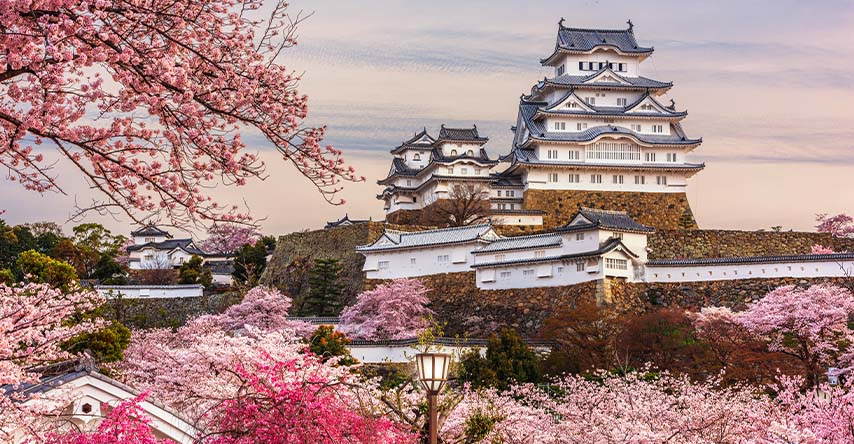
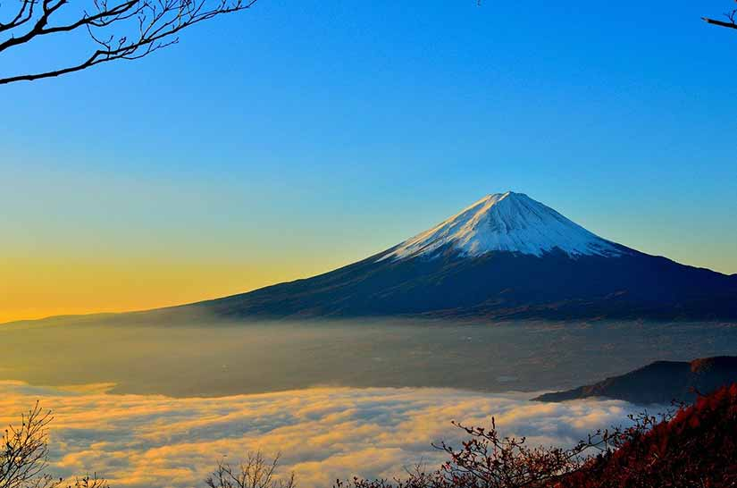
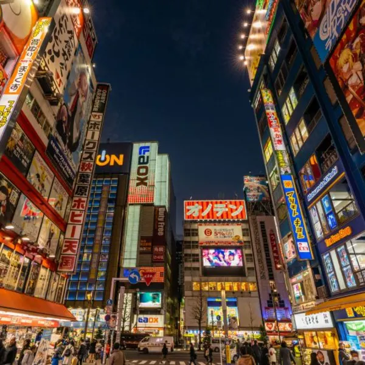

Tokyo e sua diversidade - A arquitetura high tech da capital é o começo da jornada repleta de lugares famosos que podem ser descobertos com um outro olhar. Em Tsukiji, o maior mercado de peixe do mundo, por exemplo, deixe de lado o disputado leilão de atum e aprecie com calma as ruelas. Elas formam um emaranhado curioso da gastronomia japonesa, cheias de restaurantes especialistas em sushi (e frutos do mar) e casas de chá. O preparo do chá, em uma cerimônia recheada de espiritualidade, merece uma pausa. Há muita delicadeza no manuseio das ervas, assim como nas dobraduras de papel da Arte do Origami, outro costume divinamente preservado. O melhor restaurante de sushi do mundo, o Sukiyabashi Jiro, passa despercebido dentro de uma estação de metrô. Comer no único do ramo com nota máxima no “Guia Michelin” é para poucos: há apenas 10 lugares disponíveis e é preciso reservar com antecedência. Na Terra do Sol Nascente não dá pra esquecer da Tokyo Skytree Town, com seus 634m, construída para substituir a Tokyo Tower, de 333m. Além da torre de observação, ali você pode apreciar um aquário, planetário, restaurantes e o centro comercial. Entre os templos, Senso-Ji, o mais antigo de Tokyo, é um chamado à parte devido à sua imponência, assim como a colorida rua comercial Nakamise e os tradicionais jardins da metrópole, ainda mais belos na florada das cerejeiras. Ainda não conseguiu decidir? Então escolha um café e passe um tempo observando as pessoas e seus diferentes estilos. Kyoto, a capital cultural do país - Visitar Kyoto é sentir o poder adormecido. A cidade fundada no século I sediou o Império e foi a capital do Japão até o século XIX. Pisar ali é uma verdadeira imersão na história japonesa. A começar pelo castelo Nijo, considerado Patrimônio Mundial pela Unesco e de onde os xoguns (os generais da época) davam as ordens, ou pelo Palácio Imperial, antiga residência do Imperador. Se quiser viver como monge por um dia, vá ao templo Koyasan, centro do budismo Shingon, onde os viajantes podem se juntar aos monges em orações, rituais e até na dieta vegetariana, uma vivência para não esquecer. Não se surpreenda ao ver milhares de pessoas com roupas tradicionais pelas ruas. Você estará presenciando um dos três mais coloridos festivais do país: Aoi Matsuri (em maio), Gion (julho) e Jidai (outubro). Monte Fuji: lindo por toda parte - Montanhas inspiram poder e o divino, são moradas dos deuses. Agora, imagine captar essa energia por diversos ângulos? O Monte Fuji, é um dos melhores lugares para visitar no Japão. É reverenciado por mestres da pintura e fotografia, pode ser apreciado de maneiras além do esperado. Que tal sem a camada de neve? Ao contrário da imagem clássica, já que o cume perde esse “charme” no verão, mas ainda com seus 3.776 metros de altura responsáveis por seduzir viajantes o ano todo. Além de destino para escalar, o monte é Patrimônio da Humanidade e símbolo da influência da natureza na cultura japonesa. Uma paisagem a ser explorada de todas as formas! O pico mais alto do Japão é avistado a centenas de quilômetros, em diversas direções. Nos dias de céu claro, é possível observá-lo dos arranha-céus de Tokyo (como o Tokyo Skytree). Para viver uma experiência mais original e tirar fotografias fora do comum, as cidades de Hakone, Kamakura, Fujikawaguchiko e Gotemba são boas alternativas! De Hakone, a visita à Quinta Estação, cerca de meio caminho do Monte Fuji, leva a uma boa estrutura com lojas, restaurantes e um templo. Os mais aventureiros podem iniciar a escalada ao monte (um trekking bem puxado!) a partir da estação. Os que preferem observar podem subir de teleférico até o Monte Komagatake ou embarcar em um mini cruzeiro pelo Lago Ashi.
  